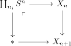
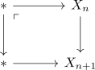

CW-Approximation of Anima
Proposition
Let $X$ be an anima. Then there exist anima $X_n$ (for $n \in \mathbb{N}_0 \cup \{-1\}$ together with inclusions $X_{n} \rightarrow X_{n+1}$ and a natural transformation $X_{n} \rightarrow \mathrm{const}(X)$ such that
- $X_{-1} = \pi_0(X)$
- the natural transformation exhibits $X$ as colimit of $... \rightarrow X_n \rightarrow X_{n+1} \rightarrow ...$
- each map $X_n \rightarrow X$ induces an isomorphism on $\pi_{i}$ for $i\leq n$ and an epimorphism on $\pi_n$
- the map $X_n \rightarrow X_{n+1}$ sits in a pushout ($\coprod_{n_i} S^n$ may be given as empty coproduct, i.e. the point)

- if $X$ is n-connected, then $X_0 \rightarrow X_1 \rightarrow ... \rightarrow X_n$ are all equivalences and (even necessarily) obtained via the pushout
